이사하다+새 집에 초대하다=집들이
새 집으로 이사한 뒤 사람들을 초대하는 모임입니다.
Chapter 13 Vocabulary Support
퀴즈를 풀기 전에 모임, 준비·대접, 양·충분함, 옷차림·착용 표현의 핵심 단서를 한곳에서 정리합니다.
learn
모임 이름은 그 모임이 생기는 이유나 상황을 함께 보면 더 쉽게 기억할 수 있습니다.
새 집으로 이사한 뒤 사람들을 초대하는 모임입니다.
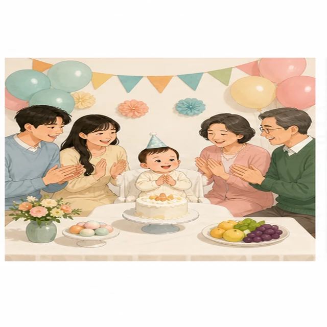
아기가 태어난 지 1년 된 것을 기념합니다.
한 해를 보내며 같이 모이는 자리입니다.
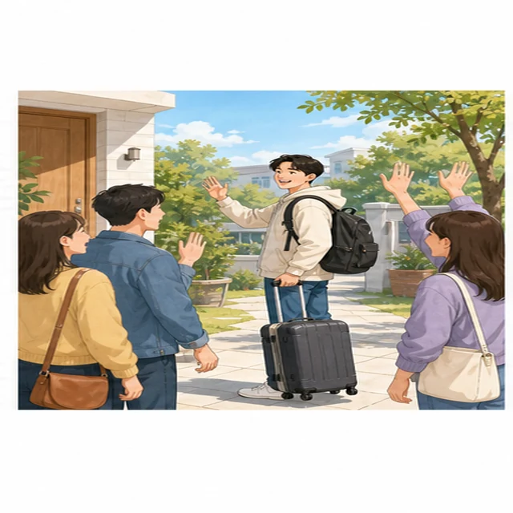
떠나는 사람과 작별 인사를 나누는 모임입니다.
같은 학교를 졸업한 사람들이 다시 만납니다.
learn
네 동사는 모두 준비와 관련이 있지만, 목적어가 달라지면 쓰임이 분명해집니다.
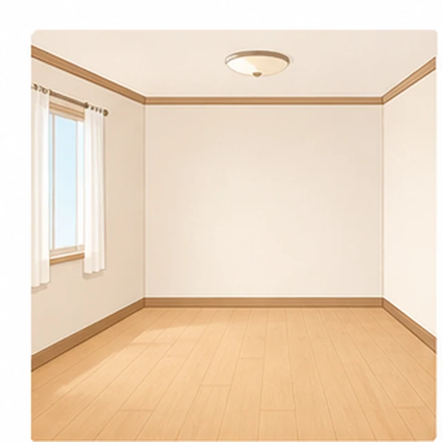
방, 거실, 행사장처럼 공간을 보기 좋게 만들 때 씁니다.
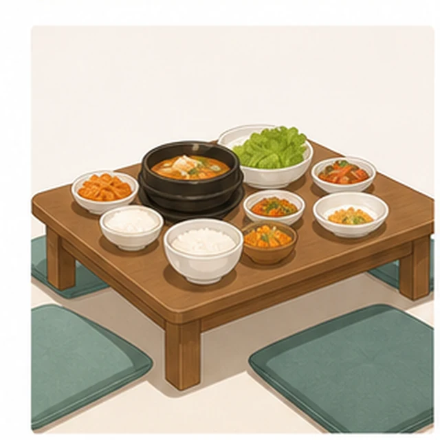
먹을 수 있도록 상이나 식탁을 준비할 때 씁니다.
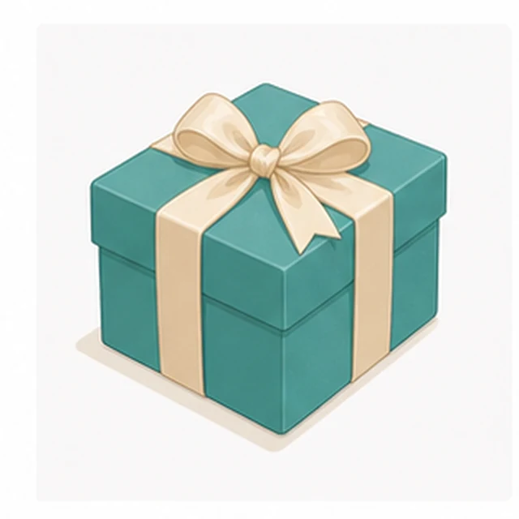
선물, 장소, 기념품처럼 필요한 것을 미리 준비할 때 씁니다.
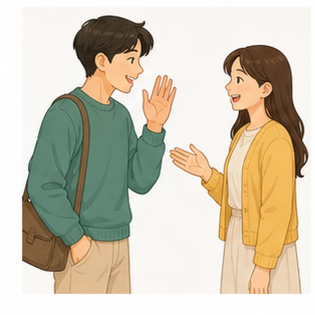
손님이나 어른에게 음식을 내고 정성껏 맞이할 때 씁니다.
learn
기준보다 적은지, 충분한지, 쓰고도 남았는지, 넓은 의미로 부족한지를 구분합니다.
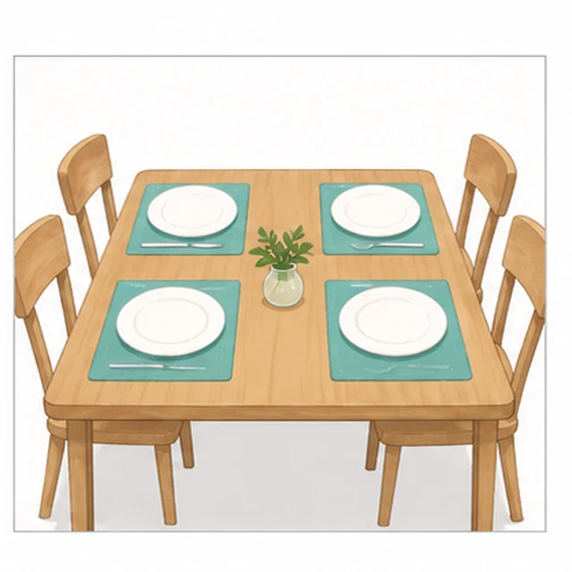
요구치에 맞거나 그보다 넉넉하면 충분하다고 말합니다.
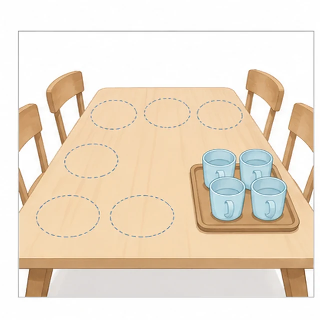
구체적인 양이나 개수가 필요한 만큼 되지 않을 때 씁니다.
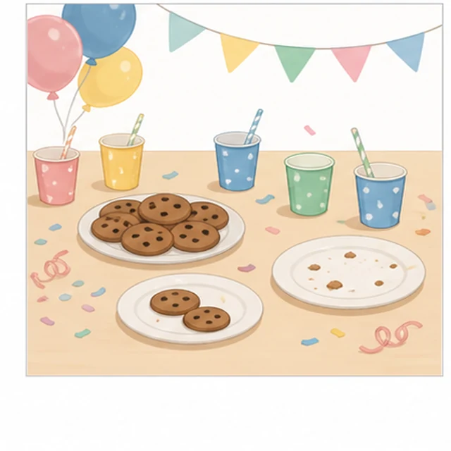
사용하거나 나누어 준 뒤에도 아직 있을 때 씁니다.
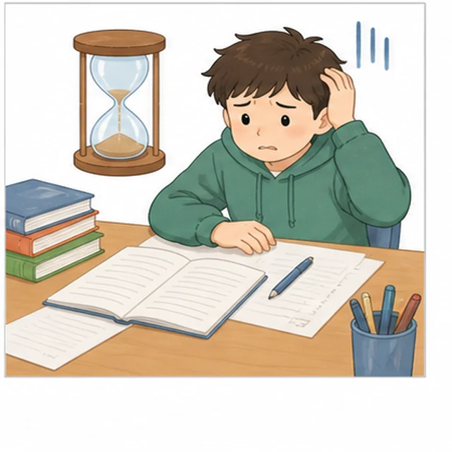
돈, 시간, 준비처럼 넓은 기준에 충분히 미치지 못할 때 씁니다.
learn
착용 표현은 목적어와 동사를 함께 기억하면 헷갈림이 줄어듭니다.

옷을 잘 갖추어 입을 때: 옷을 차려입다

목에 둘러 묶으면: 넥타이를 매다

손가락에 넣으면: 반지를 끼다

귀 장신구에는: 귀고리를 하다

손목에는: 시계를 차다

손으로 잡으면: 가방을 들다
어깨에 걸치면: 배낭을 메다
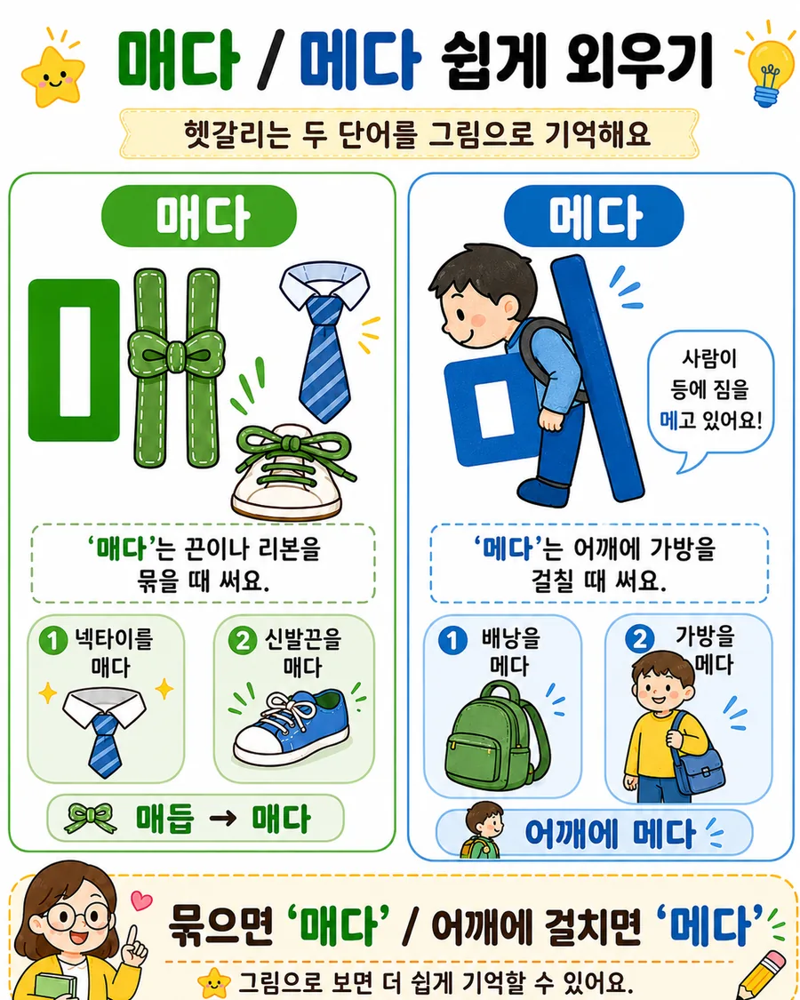
입다·신다·쓰다·매다·메다까지 더 자세한 그림 자료를 볼 수 있습니다.
착용 동사 자료 열기